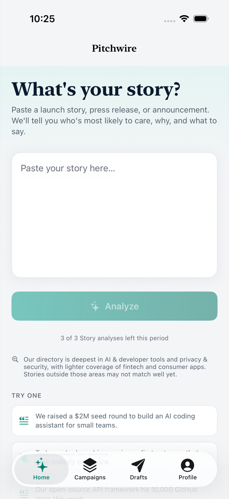
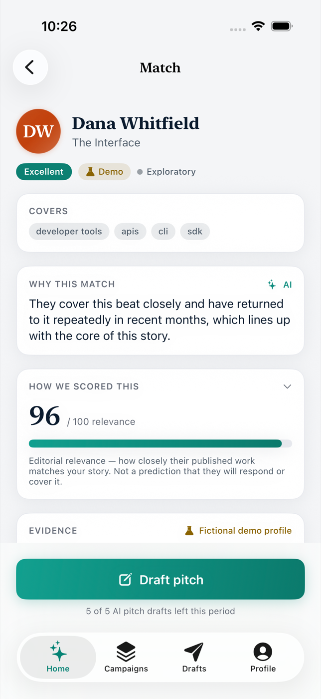
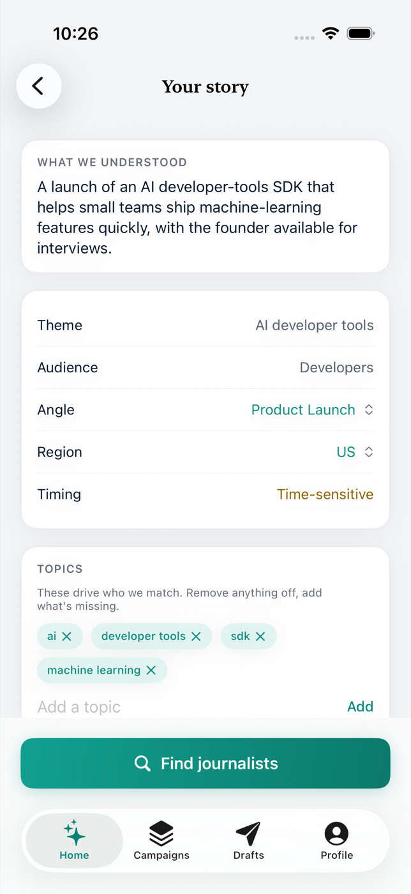
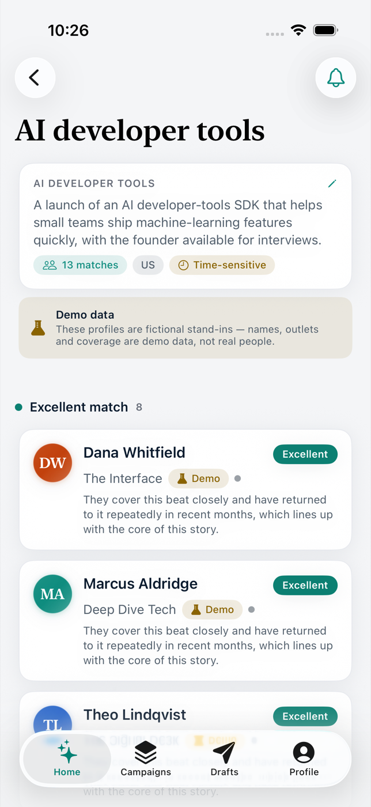
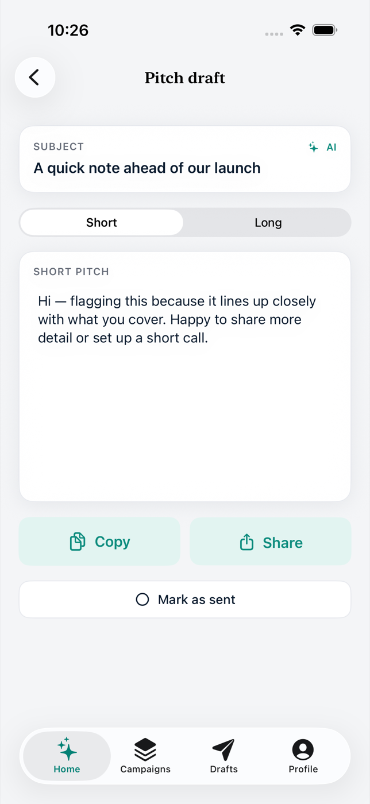
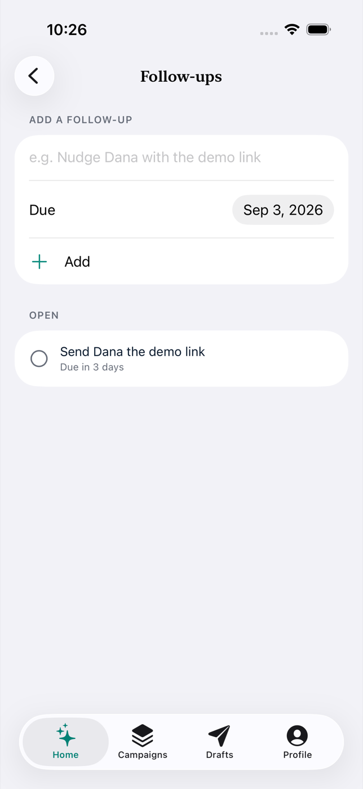

Paste a launch story. Pitchwire tells you which journalists cover the space, shows the published work that makes them relevant, and drafts a pitch you can actually send.

What it is — and isn't
The intelligence is the product: who is relevant to this story, and why, traceable to real editorial evidence. Personal contact data is never modelled, collected, or inferred.
No emails, phone numbers, or social handles — ever. No “send to 500 journalists” button. The score is editorial relevance, never a prediction that someone will reply.
Who they are, where they publish, what they cover, and the dated articles that prove it. Tap any piece of evidence through to the source and check it yourself.
Relevance is a fixed, inspectable formula over structured editorial data plus on-device semantic similarity. The language model only ever drafts words.

How it works

A press release, a blog post, a paragraph of notes. Pitchwire shows what it understood — theme, angle, audience, timing, topics — and lets you correct any of it before matching.
Matches are grouped Excellent / Strong / Possible, each with a one-line reason grounded only in that journalist's beat and published coverage. An honesty banner tells you whether the profiles are verified, candidate, or demo.


A grounded first draft — short and long versions — built from your story and the specific overlap with that journalist's work. Edit it, copy it, send it from your own mail app. There is no send button here on purpose.
After you send
Mark a pitch as sent and Pitchwire offers a follow-up reminder. Every campaign keeps its story, its matches, its drafts, and what you still owe — on your device.

Yours, on your device
Your unpublished story is analysed on your phone. Everything — campaigns, matches, drafts, follow-ups — is stored locally, and you can export a portable JSON of all of it any time. AI drafting runs through a provider-independent gateway; no AI keys live in the app.
The story-understanding step runs locally. It leaves your phone only if you send a pitch.
SwiftData on the device. No sync, no server copy, no sign-up.
One tap gives you a JSON of every campaign, match, draft, and follow-up.
Who it's for
The directory is niche-deep, not broad-shallow — density of relevance beats breadth. Deepest in AI & developer tools and privacy & security; lighter, and honestly labelled so, elsewhere.